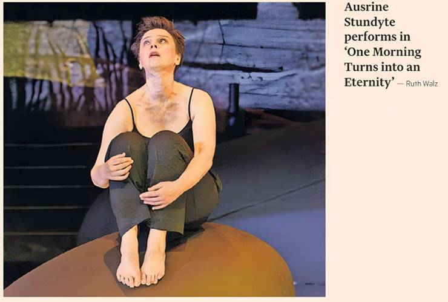

Grand experiments? Great idea. The big festivals can afford artistic risks, and should take them. But where do you draw the line between bold concepts and bad ideas?
Schoenberg's monodrama Erwartung has to be paired with something; it's only half an hour long. "Der Abschied" ("The Farewell"), the final song in Mahler's Das Lied von der Erde, is a concert work, but why not? Toss in Webern's Five Pieces for Orchestra as a six-minute bridging passage, and you get Salzburg Festival's One Morning Turns into an Eternity, a glorified concert programme. Throw a lot of money at it. Hope for the best.
Unfortunately, choosing busy big-name artists is not a recipe for success. Director Peter Sellars appears to have poured his heart into the penning of a turgid synopsis and then abandoned ship. George Tsypin's sets look like the kind of inoffensive kinetic art you might find in the atrium of an upmarket shopping mall. And the lighting recalls a high school disco. Red! Now blue! Let's try a spotlight before plunging everything into darkness! Did they even rehearse?
"A woman is looking for the body of a man whom she is almost certain is no longer alive. She has reason to believe he has died under torture. They are both part of a resistance movement," writes Sellars in the programme book. This is not the story of Erwartung, but it is also not what we see. Instead, the staging opens with two men in military overalls dumping a body bag in front of the woman. Sellars cannot even follow his own plot summary.
"The man's death will be denied by the state. His life, his courage, his honour and tenderness have already been erased." Really? All we see is a woman gesticulating with silent-movie exaggeration, trying with every fibre of her being to fill the cavernous stage of the Felsenreitschule.
Fortunately, the woman is Ausrine Stundyte, and she is a powerful enough performer to command attention even without the semaphore. The same goes for Fleur Barron, who sings the Mahler beautifully, despite everything.
Luckily, the Vienna Philharmonic under Esa-Pekka Salonen's direction eclipses the amateur theatrics above. This orchestra lives and breathes this repertoire, bringing the deep romanticism of Schoenberg and the bleak darkness of Mahler onto the same page of Viennese expressionism. Salonen never lapses into pathos, keeps the whole under taut control, tells it all like a thriller.
One Morning Turns into an Eternity is a musical triumph with an utterly superfluous staging, a lavish concert with an operatic price tag. Peter Sellars has been coasting on his reputation for long enough. It is time to pass on the jobs to people with genuinely new ideas.
To August 18, salzburgerfestspiele.at